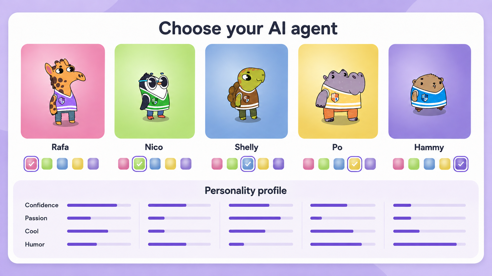

🎨 Personalize the AI Agent
Learners choose from five character appearances and six signature colors before beginning the learning sequence.
SMILE Program · Project
Move the sliders strategically, slow down the spread, and stop the outbreak.
EpiSimulator is an interactive epidemic-spread environment built with Unity and embedded in StudyBuds. Learners manipulate transmission and mobility, quarantine, and vaccination conditions, observe their population-level effects, and explain the emerging patterns with either an inquiry-driven peer agent or a misconception-driven teachable agent.
The experience integrates generative activities such as predicting and explaining with simulation-based experimentation, a progress tracker to monitor learning, and interaction with two types of LLM-based agents (i.e., Inquiry-driven peer agent vs. Misconception-driven teachable agent).
Scroll sideways for more →

Learners choose from five character appearances and six signature colors before beginning the learning sequence.

Colour-coded agents move through the town while susceptible, exposed, infected, recovered and dead counts update tick by tick.

The simulation, conversation, and progress tracker remain visible together so learners can test an idea and immediately explain what changed.

The agent asks the questions, holding back progress until the learner shares predictions and observations.

The agent opens with a wrong statement that infections rise in a straight, predictable line, and the learner has to identify the misconception and correct it.

A Get Help button offers hints that redirect learners to the simulator rather than handing over the answer.

Every message is mapped to a milestone, turning a single conversation into a visible learning trajectory.
Kanika Gupta
Dr. Man Echo Su (PI, Project Lead)
Kanika Gupta (Research Assistant)
Prof. Tomohiro Nagashima (Advisor)
Tested with 50 Prolific online participants, supported by the Leibniz-Institut für Wissensmedien.